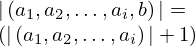
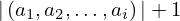

Common tuple_len_incr_equiv of type Equals¶
from the theory of proveit.core_expr_types¶
In [1]:
import proveit
# Automation is not needed when only building an expression:
proveit.defaults.automation = False # This will speed things up.
proveit.defaults.inline_pngs = False # Makes files smaller.
%load_expr # Load the stored expression as 'stored_expr'
# import the special expression
from proveit.core_expr_types import tuple_len_incr_equiv
In [2]:
# check that the built expression is the same as the stored expression
assert tuple_len_incr_equiv == stored_expr
assert tuple_len_incr_equiv._style_id == stored_expr._style_id
print("Passed sanity check: tuple_len_incr_equiv matches stored_expr")
In [3]:
# Show the LaTeX representation of the expression for convenience if you need it.
print(stored_expr.latex())
In [4]:
stored_expr.style_options()
In [5]:
# display the expression information
stored_expr.expr_info()
| core type | sub-expressions | expression | |
|---|---|---|---|
| 0 | Operation | operator: 1 operands: 2 |  |
| 1 | Literal |  | |
| 2 | ExprTuple | 3, 4 | |
| 3 | Operation | operator: 10 operands: 5 | |
| 4 | Operation | operator: 6 operands: 7 |  |
| 5 | ExprTuple | 12, 8 |  |
| 6 | Literal |  | |
| 7 | ExprTuple | 9, 14 | |
| 8 | Variable |  | |
| 9 | Operation | operator: 10 operands: 11 | |
| 10 | Literal |  | |
| 11 | ExprTuple | 12 |  |
| 12 | ExprRange | lambda_map: 13 start_index: 14 end_index: 15 |  |
| 13 | Lambda | parameter: 19 body: 16 |  |
| 14 | Literal |  | |
| 15 | Variable |  | |
| 16 | IndexedVar | variable: 17 index: 19 |  |
| 17 | Variable |  | |
| 18 | ExprTuple | 19 |  |
| 19 | Variable |  |